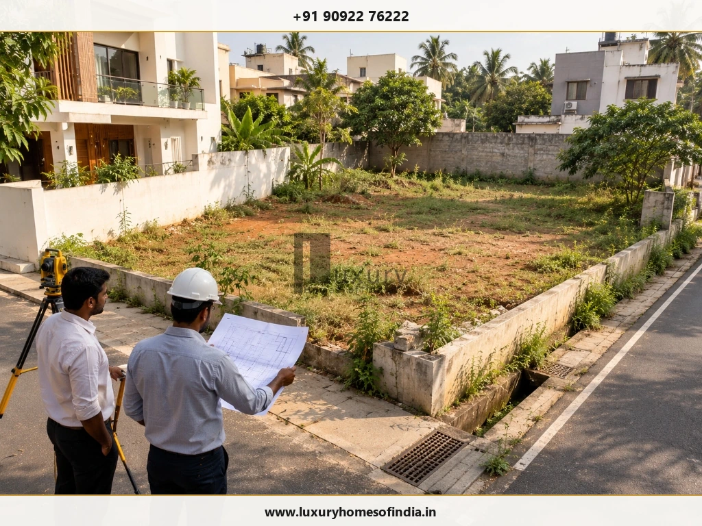
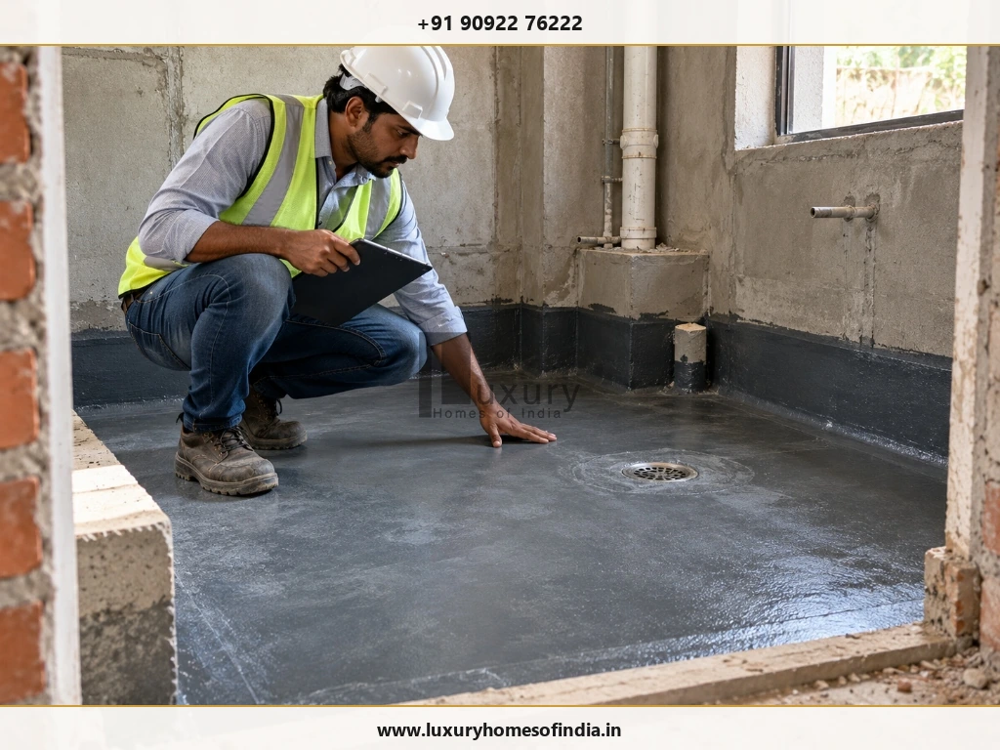

Executive Summary for Chennai Homeowners
Planning a house construction project begins long before excavation. You need to understand the plot, define your family's requirements, establish a realistic budget, develop coordinated architectural and engineering drawings, obtain the necessary approvals and agree on the contractor's scope. For homeowners in Chennai, planning should also account for local site conditions, heat, rainfall, drainage, ventilation and applicable building regulations.
The most reliable approach is to make major decisions in a logical sequence, document them and check each stage before moving forward. This guide explains how to plan a house construction project, from the initial brief to site execution and handover. It also includes a practical checklist to help you organise decisions, compare quotations and identify issues that deserve professional review before construction begins.
1. Define Your Family's Requirements
Start with how your family will use the house, not with a façade reference or a collection of attractive floor plans.
Consider:
- The number of bedrooms, bathrooms and living spaces.
- Kitchen, dining, utility and storage requirements.
- Car parking and two-wheeler access.
- Work-from-home or study areas.
- Accessibility and ground-floor accommodation needs.
- Natural light, ventilation and privacy.
- Outdoor spaces, balconies, courtyards or terraces.
- Maintenance requirements and potential future expansion.
Separate your needs into three groups:
| Priority | Examples |
|---|---|
| Essential | Bedrooms, kitchen, bathrooms and necessary circulation |
| Preferred | Study, additional storage, balcony or dedicated prayer space |
| Optional | Home automation, specialist entertainment spaces or premium feature installations |
This prioritisation makes design discussions more productive when floor area or budget needs adjustment.
Deliverable: A written design brief that your architect can use to develop the initial plan.
2. Verify the Plot Before Finalising the Design
The land determines many of the constraints within which the house must be designed.
Check the property information
Arrange appropriate professional verification of ownership and title documents, measured boundaries, survey records, access rights, land-use restrictions and relevant encumbrances.
A property lawyer and qualified survey professional can help identify issues that need resolution before you commit to construction.
Assess the physical site
- Plot dimensions, orientation and road access.
- Existing ground levels and drainage patterns.
- Surrounding buildings, overlooking and privacy.
- Available utility connections.
- Trees, overhead lines and other physical constraints.
- Potential waterlogging or flood exposure.
- Space for deliveries, material storage and construction access.
Arrange the appropriate soil investigation
Foundation design should reflect the actual ground conditions and proposed building. Do not assume that a neighbouring property has the same soil conditions or that its foundation design can be copied.
The structural engineer should determine the appropriate investigation and use the findings when designing the foundation.
Deliverable: Verified site information, a constraints list and the technical inputs needed for design.
3. Establish the Complete Construction Budget
A contractor's rate per square foot is only one input into a construction budget. It does not automatically represent the full cost of delivering a finished, usable home.
Build a cost plan
| Cost category | Items to assess |
|---|---|
| Core building work | Foundation, structure, masonry and specified finishes |
| Professional fees | Architecture, structural engineering and other consultants |
| Approvals and documentation | Applicable charges and required documentation |
| Site preparation | Survey, investigation, clearing and earthworks |
| Building services | Electrical, plumbing, drainage and specified systems |
| External works | Compound wall, gate, paving and water storage |
| Interiors | Kitchen, wardrobes, fittings and selected finishes |
| Optional systems | Solar, lift or home automation, if required |
| Contingency | Allowance for defined uncertainties and approved changes |
Check the contract scope before adding each item to the total. Some costs may already be included, while others may be excluded or provisional.
Calculate an initial core construction estimate
Use this preliminary formula:
Estimated core construction cost = Built-up area × Assumed rate per square foot
For example, an assumed built-up area of 2,000 sq. ft. multiplied by an illustrative rate of ₹2,500 per sq. ft. gives ₹50 lakh.
This is a hypothetical calculation, not an LHI quotation, current market benchmark or final project price. Actual costs depend on specifications, design complexity, location, site conditions and contractual inclusions.
A contingency should reflect the level of design development, uncertainty in quantities, site risks and procurement arrangements. An allowance of 10–15% may be considered as an initial planning scenario, but it is not a universal requirement or guarantee against overruns.
See our related guide to hidden costs in house construction in Chennai.
Deliverable: A cost plan that separates confirmed costs, provisional allowances, exclusions and contingency.
4. Appoint an Architect and Develop the Floor Plan
Involve an architect early enough to assess the plot, translate your requirements into a workable layout and coordinate the design with applicable planning requirements.
A typical process includes:
- Initial consultation: Establish the brief, budget, plot information and design preferences.
- Site analysis: Review orientation, access, surroundings and constraints.
- Concept design: Explore room arrangement, circulation and open spaces.
- Design development: Refine dimensions, stairs, windows, bathrooms, storage and exterior design.
- Technical coordination: Coordinate architecture with structural and building-services requirements.
- Design sign-off: Resolve key decisions before the relevant drawings and specifications are issued for approval or construction.
Consider Chennai's climate
Evaluate shading, orientation, ventilation, roof heat gain, rainwater management, exterior durability and maintenance access. The right solution depends on the site, building form and household requirements.
Do not assume that a particular orientation or feature guarantees comfort. Discuss its suitability with the design team.
Deliverable: An agreed design brief and developed architectural proposal.
5. Confirm Planning Requirements and Obtain Approvals
The permissible building area, height, setbacks and other requirements depend on the applicable regulations and the specific property.
Depending on the location and proposal, the relevant authority may involve CMDA, Greater Chennai Corporation, DTCP or another competent authority. The correct route should be confirmed rather than assumed from the city name alone.
Before submitting drawings, ask your architect or appropriately qualified professional to confirm:
- The competent planning and building-permission authority.
- The plot information and supporting documents required.
- Applicable setbacks, coverage, floor area and height limits.
- Parking, access and other relevant requirements.
- Whether additional clearances are needed.
- The submission process and applicable conditions.
Official starting points provided in the original draft include the Tamil Nadu Online Planning Permission portal and the CMDA Online Planning Permission portal. Confirm their current operation and applicability before relying on them.
Important: Obtain the permissions required for the proposed work before commencing construction activities that depend on them. An application submission or preliminary drawing should not be treated as permission to build.
Deliverable: The relevant approvals and a clear record of conditions that affect the design or construction.

6. Coordinate Architectural, Structural and Services Drawings
A floor plan communicates the layout, but detailed execution also requires the relevant technical drawings and specifications.
Architectural documentation
Depending on the project, this may include dimensioned plans, elevations, sections, door and window schedules, staircase details, kitchen and bathroom layouts, and finish schedules.
Structural documentation
The structural engineer should prepare the relevant foundation, column, beam, slab, reinforcement and other structural details based on the design and applicable requirements.
Do not estimate structural dimensions or modify reinforcement on site without appropriate engineering review.
Electrical and plumbing coordination
Plan electrical points, lighting, distribution boards, plumbing lines, drainage, water storage and equipment locations. Consider internet, air-conditioning, CCTV, solar provisions and automation where relevant.
Review how these systems interact with the architecture and structure before work is concealed.
Deliverable: A coordinated set of current drawings and specifications, with a clear process for approving revisions.
7. Prepare a Detailed Bill of Quantities
A bill of quantities (BOQ) describes the specified work, quantities, units and applicable rates used to prepare and assess pricing.
Depending on the project scope, it may cover excavation, foundations, concrete, reinforcement, masonry, plastering, waterproofing, flooring, windows, doors, electrical work, plumbing, painting, finishes and external works.
Document relevant material grades, brands or approved equivalents, dimensions and finish standards. Vague descriptions such as “premium materials” do not provide enough information for meaningful comparison.
Give contractors the same drawings, BOQ and specifications wherever possible. Compare inclusions, exclusions, provisional items, taxes and payment conditions rather than looking at the headline total alone.
Deliverable: A measurable scope that can be priced, monitored and reconciled against the work executed.
8. Select the Right Builder or Contractor
The appropriate contract model depends on your project, required services and preferred level of involvement.
| Arrangement | General responsibility pattern |
|---|---|
| Turnkey | One primary party delivers the defined scope through the agreed handover stage |
| Labour-plus-material | The contractor supplies labour and specified materials |
| Labour-only | The owner commonly procures materials and the contractor supplies labour |
| Separate work packages | Multiple contractors execute defined packages that require coordination |
Actual responsibilities depend on the written agreement.
Before appointing a contractor, assess relevant experience, inspect available completed work where possible, check references, review the quotation and BOQ, understand site-supervision arrangements and clarify the defect-correction process.
The written contract should establish the scope, specifications, exclusions, payment milestones, schedule, variation procedure, responsibilities and handover requirements.
Do not select a contractor on the lowest price alone. An incomplete scope can make a low quotation difficult to compare with a more detailed one.
Read our guide on how to choose a luxury home builder in Chennai.
Deliverable: A signed agreement with clearly allocated responsibilities and documented commercial terms.
9. Build a Realistic Construction Schedule
The schedule should show the order of work, key milestones, dependencies, procurement requirements and inspections.
| Stage | Main activities |
|---|---|
| Planning and design | Brief, site assessment and design development |
| Approvals | Documentation and submissions to the applicable authority |
| Pre-construction | BOQ, contract, procurement planning and site setup |
| Foundation | Excavation and designed foundation work |
| Structure | Structural work according to approved drawings |
| Walls and services | Masonry, electrical, plumbing and related installations |
| Finishes | Waterproofing, flooring, painting and fittings |
| Completion | System testing, inspections, defect correction and handover |
Some activities may overlap, while others must follow a defined sequence. For example, relevant waterproofing inspections should occur before the work is concealed.
Avoid promising a fixed handover date before the scope, approvals, procurement plan and site constraints have been assessed.
Review progress against agreed milestones and document decisions that could affect the programme.
Deliverable: A baseline schedule, a list of dependencies and an agreed progress-review process.
10. Plan Material Procurement and Site Management
Material procurement affects work continuity, storage, quality and the risk of rework.
Before starting, identify long-lead items, confirm approved samples, assign purchasing responsibilities and establish delivery and storage arrangements. Maintain records of deliveries and check materials against the specified requirements.
Do not substitute a material or alter a specification without the required approval.
Agree on a regular site-update process covering completed work, upcoming activities, material availability, quality observations and decisions needed from the owner.
A short written record of site meetings, instructions and approved changes can help keep everyone working from the same information.
Deliverable: A procurement schedule, material-approval process and documented site-reporting routine.
11. Establish Quality-Control and Safety Checks
Quality should be planned throughout construction rather than assessed only after the house is finished.
The responsible professionals should identify the inspections and tests needed for the actual design and scope.
Possible checkpoints include:
- Excavation and foundation preparation.
- Reinforcement and formwork before concrete placement.
- Concrete quality and curing requirements.
- Masonry alignment and workmanship.
- Concealed plumbing and electrical installations.
- Waterproofing inspections and applicable tests.
- Window, door and façade sealing.
- Finishing quality and installation checks.
- Testing of electrical, plumbing, pumping and other installed systems.
Keep records of relevant inspections, test results, approved changes and corrective actions.
Before handover, maintain a defect list with the location of each item, the required action and the agreed resolution status. Visual appearance alone is not enough; relevant systems should also be tested.

Deliverable: A project-specific inspection plan and records of completed checks.
12. Define Handover Requirements Early
Handover should be part of the original project scope rather than an afterthought.
Depending on the project and applicable requirements, the handover package may include:
- Relevant approved drawings and permission documents.
- Applicable completion or occupancy documentation.
- Structural and material test records, where required.
- Electrical, plumbing and building-services information.
- Equipment manuals and warranties.
- Records of installed materials and finishes.
- Instructions for pumps, tanks and other systems.
- Keys, access devices and agreed deliverables.
- A completed defect list or a documented process for outstanding items.
Confirm the applicable completion and occupancy requirements with the responsible professionals and relevant authority. They can vary by property and building type.
Deliverable: A documented handover checklist, relevant records and an agreed process for remaining defects.
13. Common House Construction Planning Mistakes
- Designing before verifying the plot: Resolve site and regulatory constraints before committing to a detailed layout.
- Budgeting only from a square-foot rate: Check professional fees, approvals, external works, services, interiors and contract exclusions.
- Delaying finish selections: Identify decisions that affect lead times, coordination or installation before they interrupt site work.
- Starting with incomplete drawings: Resolve important design and service coordination before execution.
- Changing work informally: Document variations and obtain the required professional approvals before implementing changes.
- Making payments without checking milestones: Follow the written payment terms and verify the relevant completed work.
- Skipping inspections: Plan the checks needed before reinforcement, waterproofing or concealed services become inaccessible.
- Choosing a contractor on price alone: Compare the same scope, material specifications, exclusions, supervision and contractual responsibilities.
14. House Construction Planning Checklist
Use this list to review readiness before construction begins.
- Define family requirements and design priorities.
- Verify property documents and plot boundaries.
- Assess site access, orientation and drainage.
- Arrange the appropriate soil investigation.
- Appoint the architect and relevant professionals.
- Confirm applicable planning rules and the competent authority.
- Develop and finalise the architectural design.
- Coordinate structural, electrical and plumbing drawings.
- Obtain the required permissions.
- Prepare the BOQ and material specifications.
- Establish the complete budget and contingency approach.
- Compare contractor quotations on a consistent scope.
- Sign an agreement defining responsibilities and exclusions.
- Agree on the schedule, payment milestones and variation procedure.
- Plan procurement, storage and quality inspections.
- Define the handover documents and defect-correction process.
Use the checklist with your architect and project team. The exact requirements depend on the property, building design, approvals and contract scope.
Frequently Asked Questions
Conclusion: Good Planning Is the Foundation of a Better Home
Planning a house involves more than selecting a floor plan or calculating a rate per square foot. It requires coordinated decisions about the plot, family needs, architecture, engineering, approvals, budget, procurement, contractor responsibilities and quality control.
The strongest starting point is a verified site, a clear brief, coordinated drawings, a detailed BOQ, a realistic cost plan and a written construction agreement. These provide a practical basis for managing decisions and checking progress throughout the project.
For Chennai homeowners, site-specific planning also matters: the proposed house must respond to its actual surroundings, local requirements, drainage conditions, climate and long-term maintenance needs.
Discuss Your House Construction Requirements with LHI
If you are planning a home in Chennai, prepare the basic project information before requesting a project discussion:
- Plot location and available site information.
- Approximate proposed built-up area.
- Intended number of floors.
- Main family and space requirements.
- Preferred material and finish level.
- Current design and approval status.
- Your preliminary budget and key priorities.
These details can help establish the scope of an initial discussion. Any project estimate or recommendation should depend on the verified site information, agreed specifications and defined scope.
Contact Luxury Homes of India
- Website: https://www.luxuryhomesofindia.in/
- Phone: +91 90922 76222
- Email: info@luxuryhomesofindia.in
- Address: #85, 4th Floor, Lotus Tower, Guindy, Chennai – 600032
Disclaimer: This article is for general educational purposes and is not legal, engineering or financial advice. Building requirements, permission procedures and technical requirements depend on the property, building type and applicable regulations. Consult appropriately qualified professionals and obtain the required approvals before construction.